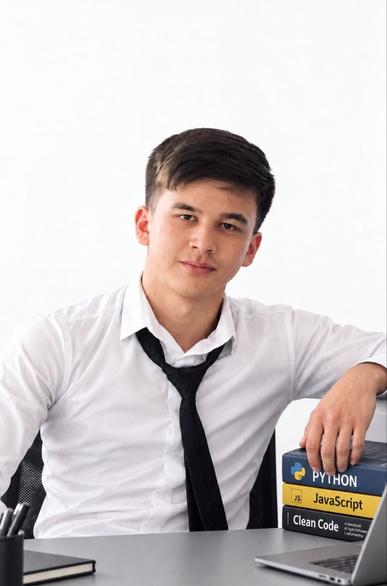

Salom, men Fayzullohman
11-sinf o'quvchisi. Germaniyadagi universitetda kiber xavfsizlikni o'qishni maqsad qilganman. Nemis tilini o'rganyapman va o'z loyihamni rivojlantiryapman.

Qisqacha tanishuv
Andijon viloyatida yashovchi 11-sinf o'quvchisiman. Asosiy yo'nalishim kiber xavfsizlik, uni Germaniyadagi universitetda o'qishni orzu qilaman.
Frontend kurslarini tugatib, Junior sertifikatini olganman. Hozircha bu yo'nalishda ishlash niyatim yo'q, lekin bu bilimlar o'z loyihamda asqotyapti.
Maktabdan tashqari nemis tili va matematika kurslariga qatnayman.
O'qish va yutuqlar
Ingliz tili B2
Milliy sertifikat
Frontend Junior
Kursni tugatib olingan sertifikat
Nemis tili
O'quv kursi, hozir davom etmoqda
Matematika
O'quv kursi, hozir davom etmoqda
← Yon tomonga suring →
Mening loyiham
AgroServ
Qishloq xo'jaligiga oid xizmatlarni bir joyda jamlashni maqsad qilgan veb-sayt. Unda yangiliklar, do'kon, xizmatlar va texnikalar bo'limlari mavjud.
Eslatma: loyiha hali tugallanmagan. Telefonda interfeys sochilib ketishi yoki chiroyli ko'rinmasligi mumkin.
Qadamlarim
Kursni tugatdim
Junior sertifikatini oldim.
Ingliz tili B2
Milliy sertifikatni qo'lga kiritdim.
Nemis tili va matematika
Kurslarga qatnayman, AgroServ ustida ishlayman.
Germaniyada kiber xavfsizlik
Universitetga o'qishga kirish.
Sevimli musiqalarim
Hozir tez-tez tinglaydigan qo'shiqlarim.
505
Arctic Monkeys
Bog'lanamiz
Hamkorlik, maslahat yoki oddiy suhbat uchun yozing.